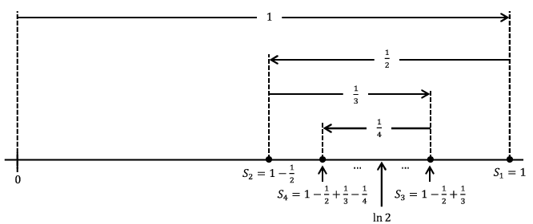

Section 4.2 Series Anomalies
Up to this point, we have been somewhat frivolous in our approach to series. This approach mirrors eighteenth century mathematicians who ingeniously exploited calculus and series to provide mathematical and physical results which were virtually unobtainable before. Mathematicans were eager to push these techniques as far as they could to obtain their results and they often showed good intuition regarding what was mathematically acceptable and what was not. However, as the envelope was pushed, questions about the validity of the methods surfaced.
As an illustration consider the series expansion
\begin{equation*}
\frac{1}{1+x}=1-x+x^2-x^3+\cdots\text{.}
\end{equation*}
If we substitute \(x=1\) into this equation, we obtain
\begin{equation*}
\frac{1}{2}=1-1+1-1+\cdots\text{.}
\end{equation*}
If we group the terms as follows \((1-1)+(1-1)+\cdots\text{,}\) the series would equal \(0\text{.}\) A regrouping of \(1+(-1+1)+(-1+1)+\cdots\) provides an answer of \(1\text{.}\) This violation of the associative law of addition did not escape the mathematicians of the 1700’s. In his 1760 paper On Divergent Series Euler said:
Notable enough, however are the controversies over the series \(1-1+1-1+etc\text{,}\) whose sum was given by Leibniz as \(\frac{1}{2}\text{,}\) although others disagree . . . Understanding of this question is to be sought in the word “sum;” this idea, if thus conceived - namely, the sum of a series is said to be that quantity to which it is brought closer as more terms of a series are taken - has relevance only for the convergent series, and we should in general give up this idea of sum for divergent series. On the other hand, as series in analysis arise from the expansion of fractions or irrational quantities or even of transcendentals, it will, in turn, be permissible in calculation to substitute in place of such series that quantity out of whose development it is produced.
Even with this formal approach to series, an interesting question arises. The series for the antiderivative of \(\frac{1}{1+x}\) does converge for \(x=1\) while this one does not. Specifically, taking the antiderivative of the above series, we obtain
\begin{equation*}
\ln(1+x)=x-\frac{1}{2}x^2+\frac{1}{3}x^3-\cdots\text{.}
\end{equation*}
If we substitute \(x=1\) into this series, we obtain \(\ln 2=1-\frac{1}{2}+\frac{1}{3}-\cdots\text{.}\) It is not hard to see that such an alternating series converges. The following picture shows why. In this diagram, \(S_n\) denotes the partial sum \(1-\frac{1}{2}+\frac{1}{3}-\cdots+\frac{(-1)^{n+1}}{n}\text{.}\)

From the diagram we can see \(S_2\leq S_4\leq S_6\leq\cdots\leq\cdots\leq S_5\leq S_3\leq S_1\) and \(S_{2k+1}-S_{2k}=\frac{1}{2k+1}\text{.}\) It seems that the sequence of partial sums will converge to whatever is in the “middle.” Our diagram indicates that it is ln \(2\) in the middle but actually this is not obvious. Nonetheless it is interesting that one series converges for \(x=1\) but the other does not.
Problem 4.2.1.
Use the fact that
\begin{equation*}
1-\frac{1}{2}+\frac{1}{3}-\cdots+\frac{(-1)^{2k+1}}{2k}\leq\ln 2\leq 1-\frac{1}{2}+\frac{1}{3}-\cdots+\frac{(-1)^{2k+2}}{2k+1}
\end{equation*}
to determine how many terms of the series \(\sum_{n=1}^\infty\frac{(-1)^{n+1}}{n}\) should be added together to approximate \(\ln 2\) to within \(.0001\) without actually computing what \(\ln 2\) is.
There is an even more perplexing situation brought about by these examples. An infinite sum such as \(1-1+1-1+\cdots\) appears to not satisfy the associative law for addition. While a convergent series such as \(1-\frac{1}{2}+\frac{1}{3}-\cdots\) does satisfy the associative law, it does not satisfy the commutative law. In fact, it does not satisfy it rather spectacularly.
A generalization of the following result was stated and proved by Bernhard Riemann in 1854.
Theorem 4.2.2.
Let \(a\) be any real number. There exists a rearrangement of the series \(1-\frac{1}{2}+\frac{1}{3}-\cdots\) which converges to \(a\text{.}\)
This theorem shows that a series is most decidedly not a great big sum. It follows that a power series is not a great big polynomial.
To set the stage, consider the harmonic series
\begin{equation*}
\sum_{n=1}^\infty\frac{1}{n}=1+\frac{1}{2}+\frac{1}{3}+\cdots\text{.}
\end{equation*}
Even though the individual terms in this series converge to \(0\text{,}\) the series still diverges (to infinity) as evidenced by the inequality
\begin{align*}
\left(1+\frac{1}{2}\right)\amp +\left(\frac{1}{3}+\frac{1}{4}\right)+\left(\frac{1}{5}+\frac{1}{6}+ \frac{1}{7}+\frac{1}{8}\right)+\left(\frac{1}{9}+\cdots+\frac{1}{16}\right)+\cdots\\
\amp >\frac{1}{2}+\left(\frac{1}{4}+\frac{1}{4}\right)+\left(\frac{1}{8}+ \frac{1}{8}+\frac{1}{8}+\frac{1}{8}\right)+\left(\frac{1}{16}+\cdots+\frac{1}{16}\right)+\cdots\\
\amp =\frac{1}{2}+\frac{1}{2}+\frac{1}{2}+\frac{1}{2}+\cdots\\
\amp = \infty\text{.}
\end{align*}
Armed with this fact, we can see why
Theorem 4.2.2 is true. First note that
\begin{equation*}
-\frac{1}{2}-\frac{1}{4}-\frac{1}{6}-\cdots=-\frac{1}{2}(1+\frac{1}{2}+ \frac{1}{3}+\cdots)=-\infty
\end{equation*}
and
\begin{equation*}
1+\frac{1}{3}+\frac{1}{5}+\cdots\geq\frac{1}{2}+\frac{1}{4}+\frac{1}{6}+\ldots= \infty\text{.}
\end{equation*}
This says that if we add enough terms of \(-\frac{1}{2}-\frac{1}{4}-\frac{1}{6}-\cdots\) we can make such a sum as small as we wish and if we add enough terms of \(1+\frac{1}{3}+\frac{1}{5}+\cdots\) we can make such a sum as large as we wish. This provides us with the general outline of the proof. The trick is to add just enough positive terms until the sum is just greater than \(a\text{.}\) Then we start to add on negative terms until the sum is just less than \(a\text{.}\) Picking up where we left off with the positive terms, we add on just enough positive terms until we are just above \(a\) again. We then add on negative terms until we are below \(a\text{.}\) In essence, we are bouncing back and forth around \(a\text{.}\) If we do this carefully, then we can get this rearrangement to converge to \(a\text{.}\) The notation in the proof below gets a bit hairy, but keep this general idea in mind as you read through it.
Let \(O_1\) be the first odd integer such that \(1+\frac{1}{3}+\frac{1}{5}+\cdots+\frac{1}{O_1}>a\text{.}\) Now choose \(E_1\) to be the first even integer such that
\begin{equation*}
-\frac{1}{2}-\frac{1}{4}-\frac{1}{6}-\cdots-\frac{1}{E_1} \lt a-\left(1+\frac{1}{3}+\frac{1}{5}+\cdots+\frac{1}{O_1}\right)\text{.}
\end{equation*}
Thus
\begin{equation*}
1+\frac{1}{3}+\frac{1}{5}+\cdots+\frac{1}{O_1}-\frac{1}{2}-\frac{1}{4} - \frac{1}{6}-\cdots-\frac{1}{E_1}\lt a\text{.}
\end{equation*}
Notice that we still have \(\frac{1}{O_1+2}+\frac{1}{O_1+4}+\cdots=\infty\text{.}\) With this in mind, choose \(O_2\) to be the first odd integer with
\begin{equation*}
\frac{1}{O_1+2}+\frac{1}{O_1+4}+\cdots\frac{1}{O_2}>a-\left(1+\frac{1}{3}+ \frac{1}{5}+\cdots+\frac{1}{O_1}-\frac{1}{2}-\frac{1}{4}-\frac{1}{6}-\cdots- \frac{1}{E_1}\right)\text{.}
\end{equation*}
Thus we have
\begin{equation*}
a\lt 1+\frac{1}{3}+\frac{1}{5}+\cdots+\frac{1}{O_1}-\frac{1}{2}-\frac{1}{4}- \frac{1}{6}-\cdots-\frac{1}{E_1}+\frac{1}{O_1+2}+\frac{1}{O_1+4}+\cdots+ \frac{1}{O_2}\text{.}
\end{equation*}
Furthermore, since
\begin{equation*}
1+\frac{1}{3}+\frac{1}{5}+\cdots+\frac{1}{O_1}-\frac{1}{2}-\frac{1}{4}- \frac{1}{6}-\cdots-\frac{1}{E_1}+\frac{1}{O_1+2}+\frac{1}{O_1+4}+\cdots+ \frac{1}{O_2-2}\lt a
\end{equation*}
we have
\begin{align*}
\amp \left|1+\frac{1}{3}+\frac{1}{5}+\cdots+\frac{1}{O_1}-\frac{1}{2}-\frac{1}{4}- \frac{1}{6}-\cdots\right.\\
\amp \left.-\frac{1}{E_1}+\frac{1}{O_1+2}+\frac{1}{O_1+4}+\cdots+ \frac{1}{O_2}-a\right|\lt \frac{1}{O_2}\text{.}
\end{align*}
In a similar fashion choose \(E_2\) to be the first even integer such that
\begin{align*}
1+\frac{1}{3}+\frac{1}{5}+\cdots\amp +\frac{1}{O_1}-\frac{1}{2}- \frac{1}{4}-\frac{1}{6}-\amp \cdots\\
\amp -\frac{1}{E_1}+ \frac{1}{O_1+2}+\frac{1}{O_1+4}+\cdots\\
\amp +\frac{1}{O_2}-\frac{1}{E_1+2}-\frac{1}{E_1+4}-\cdots\\
\amp -\frac{1}{E_2}\lt a\text{.}
\end{align*}
Since
\begin{align*}
1+\frac{1}{3}+\frac{1}{5}\amp +\cdots+\frac{1}{O_1}-\frac{1}{2}- \frac{1}{4}-\frac{1}{6}-\cdots-\frac{1}{E_1}\\
\amp +\frac{1}{O_1+2}+\frac{1}{O_1+4}+\cdots+\frac{1}{O_2}- \frac{1}{E_1+2}-\frac{1}{E_1+4}-\cdots-\frac{1}{E_2-2}>a
\end{align*}
then
\begin{align*}
\left|1+\frac{1}{3}\right.+\frac{1}{5}\amp +\cdots+\frac{1}{O_1}-\frac{1}{2}- \frac{1}{4}-\frac{1}{6}-\cdots-\frac{1}{E_1}\\
\amp +\frac{1}{O_1+2}+\frac{1}{O_1+4}+\cdots+\frac{1}{O_2}- \frac{1}{E_1+2}-\frac{1}{E_1+4}-\cdots-\left.\frac{1}{E_2}-a\right|\\
\amp \lt \frac{1}{E_2}\text{.}
\end{align*}
Again choose \(O_3\) to be the first odd integer such that
\begin{align*}
a\lt 1+\frac{1}{3}\amp +\frac{1}{5}+\cdots+\frac{1}{O_1}-\frac{1}{2}-\frac{1}{4}- \frac{1}{6}-\cdots\\
\amp -\frac{1}{E_1}+\frac{1}{O_1+2}+\frac{1}{O_1+4}+\cdots+ \frac{1}{O_2}+ \cdots\\
\amp -\frac{1}{E_1+2}-\frac{1}{E_1+4}-\cdots-\frac{1}{E_2}+\frac{1}{O_2+2}+ \frac{1}{O_2+4}+\cdots+\frac{1}{O_3}
\end{align*}
and notice that
\begin{align*}
\left|1+\frac{1}{3}\right.\amp +\frac{1}{5}+\cdots+\frac{1}{O_1}-\frac{1}{2}-\frac{1}{4}\\
\amp -\frac{1}{6}-\cdots-\frac{1}{E_1}+\frac{1}{O_1+2}+\frac{1}{O_1+4}+\cdots+ \frac{1}{O_2}+\cdots\\
\amp -\frac{1}{E_1+2}-\frac{1}{E_1+4}-\cdots-\frac{1}{E_2}+\frac{1}{O_2+2}+ \frac{1}{O_2+4}+\cdots+\left.\frac{1}{O_3}-a\right|\\
\amp \lt \frac{1}{O_3}\text{.}
\end{align*}
Continue defining \(O_k\)and \(E_k\) in this fashion. Since \(\lim_{k\rightarrow\infty}\frac{1}{O_k}=\,\lim_{k\rightarrow\infty} \frac{1}{E_k}=0\text{,}\) it is evident that the partial sums
\begin{align*}
1+\frac{1}{3}\amp +\frac{1}{5}+\cdots+\frac{1}{O_1}-\frac{1}{2}-\frac{1}{4}\\
\amp -\frac{1}{6}-\cdots-\frac{1}{E_1}+\frac{1}{O_1+2}+\frac{1}{O_1+4}+\cdots\\
\amp + \frac{1}{O_2}+\cdots -\frac{1}{E_{k-2}+2}-\frac{1}{E_{k-2}+4}-\cdots\\
\amp -\frac{1}{E_{k-1}}+ \frac{1}{O_{k-1}+2}+\frac{1}{O_{k-1}+4}+\cdots+\frac{1}{O_k}
\end{align*}
and
\begin{align*}
1+\frac{1}{3}\amp +\frac{1}{5}+\cdots+\frac{1}{O_1}-\frac{1}{2}-\frac{1}{4}- \frac{1}{6}\\
\amp -\cdots-\frac{1}{E_1}+\frac{1}{O_1+2}+\frac{1}{O_1+4}+\cdots+ \frac{1}{O_2}+\cdots\\
\amp -\frac{1}{E_{k-2}+2}-\frac{1}{E_{k-2}+4}-\cdots-\frac{1}{E_{k-1}}
\end{align*}
must converge to \(a\text{.}\) Furthermore, it is evident that every partial sum of the rearrangement
\begin{align*}
1+\frac{1}{3}\amp +\frac{1}{5}+\cdots+\frac{1}{O_1}-\frac{1}{2}-\frac{1}{4}- \frac{1}{6}\\
\amp -\cdots-\frac{1}{E_1}+\frac{1}{O_1+2}+\frac{1}{O_1+4}+\cdots+ \frac{1}{O_2}+\cdots
\end{align*}
is trapped between two such extreme partial sums. This forces the entire rearranged series to converge to \(a\text{.}\)
The next two problems are similar to the above, but notationally are easier since we don’t need to worry about converging to an actual number. We only need to make the rearrangement grow (or shrink in the case of
problem 4.2.4) without bound.
Problem 4.2.3.
Show that there is a rearrangement of \(1-\frac{1}{2}+\frac{1}{3}-\frac{1}{4}+\cdots\) which diverges to \(\infty\text{.}\)
Problem 4.2.4.
Show that there is a rearrangement of \(1-\frac{1}{2}+\frac{1}{3}-\frac{1}{4}+\cdots\) which diverges to \(-\infty\text{.}\)
It is fun to know that we can rearrange some series to make them add up to anything you like but there is a more fundamental idea at play here. That the negative terms of the alternating Harmonic Series diverge to negative infinity and the positive terms diverge to positive infinity make the convergence of the alternating series very special.
Consider, first we add \(1\text{.}\) This is one of the positive terms so our sum is starting to increase without bound. Next we add \(-1/2\) which is one of the negative terms so our sum has turned around and is now starting to decrease without bound. Then another positive term is added: increasing without bound. Then another negative term: decreasing. And so on. The convergence of the alternating Harmonic Series is the result of a delicate balance between a tendency to run off to positive infinity and back to negative infinity. When viewed in this light it is not really too surprising that rearranging the terms can destroy this delicate balance.
Naturally, the alternating Harmonic Series is not the only such series. Any such series is said to converge “conditionally” — the condition being the specific arrangement of the terms.
To stir the pot a bit more, some series do satisfy the commutative property. More specifically, one can show that any rearrangement of the series \(1-\frac{1}{2^2}+\frac{1}{3^2}-\cdots\) must converge to the same value as the original series (which happens to be \(\int_{x=0}^1\frac{\text{ ln } (1+x)}{x}dx\approx.8224670334\)). Why does one series behave so nicely whereas the other does not?
Issues such as these and, more generally, the validity of using the infinitely small and infinitely large certainly existed in the 1700’s, but they were overshadowed by the utility of the calculus. Indeed, foundational questions raised by the above examples, while certainly interesting and of importance, did not significantly deter the exploitation of calculus in studying physical phenomena. However, the envelope eventually was pushed to the point that not even the most practically oriented mathematician could avoid the foundational issues.